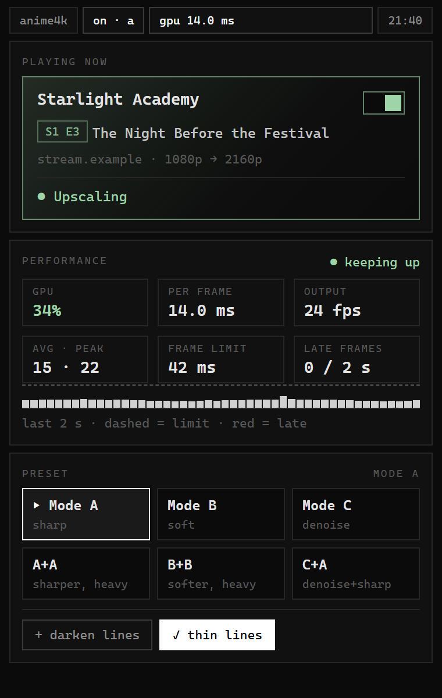
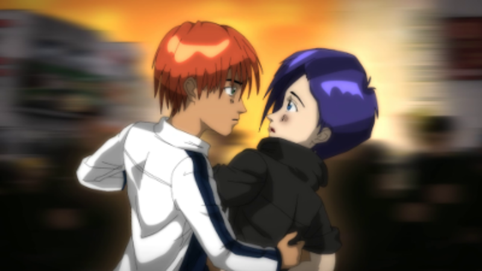

<title>Anime4Nerd</title>
<meta name="claude:viewport-fit-sides" content="cover">
<meta name="description" content="Anime4Nerd is a browser extension that runs the original Anime4K shaders on any web video, live, on your GPU. 2x upscaling, six presets, nothing leaves your machine.">
<link rel="icon" href="assets/icon.png">
<link rel="preconnect" href="https://fonts.googleapis.com">
<link rel="preconnect" href="https://fonts.gstatic.com" crossorigin>
<link rel="stylesheet" href="https://fonts.googleapis.com/css2?family=JetBrains+Mono:wght@400;600;700&family=IBM+Plex+Sans:wght@400;500;600&display=swap">
<link rel="stylesheet" href="assets/site.css">

<header class="bar">
  <div class="wrap">
    <a class="brand" href="#top">Anime4Nerd</a>
    <nav class="nav" aria-label="Sections">
      <a href="#compare">before/after</a>
      <a href="#how">how it works</a>
      <a href="#presets">presets</a>
      <a href="#install">install</a>
      <a href="#changes">what's new</a>
      <a href="privacy">privacy</a>
    </nav>
  </div>
</header>

<main class="wrap" id="top">
  <section class="hero">
    <div>
      <span class="label">browser extension · chrome · brave · edge</span>
      <h1>Sharper anime,<br>right in your <span class="accent">browser</span>.</h1>
      <p class="lede">Anime4Nerd runs the original Anime4K networks on any web video, live, on your own GPU. Switch a video on and every frame is restored and upscaled 2×.</p>
      <div class="cta">
        <a class="btn primary" href="https://chromewebstore.google.com/detail/anime4nerd/kblnmcdmlgeidaclnhjmcffefmkehkpm" rel="noopener">Install Anime4Nerd</a>
        <a class="btn" href="#compare">See the difference</a>
      </div>
      <div class="facts">
        <span><b>1080p → 2160p</b> output</span>
        <span><b>6</b> presets</span>
        <span><b>0</b> network requests</span>
      </div>
    </div>
    <figure class="shot" aria-label="The Anime4Nerd popup">
      
    </figure>
  </section>

  <section id="compare">
    <span class="label">before / after</span>
    <h2 style="margin-top:10px">Drag to compare.</h2>
    <p class="prose" style="color:var(--dim)">A 225p anime frame scaled to 2×. Left: the browser's normal scaling. Right: Anime4K A+A with darken lines, produced by the extension's own pipeline.</p>
    <div class="compare" id="cmp" style="--pos:50%">
      <div class="layer">
        
        <span class="tag l">browser scaling</span>
      </div>
      <div class="layer after">
        
        <span class="tag r">anime4nerd · a+a</span>
      </div>
      <span class="divider"></span>
      <span class="handle" aria-hidden="true">⇆</span>
      <input type="range" id="cmp-range" min="0" max="100" value="50" aria-label="Comparison position: left of the line shows browser scaling, right of the line shows Anime4Nerd">
    </div>
    <div class="cmp-meter" id="cmp-meter" style="--pos:50%" aria-hidden="true">
      <span class="b" id="cmp-b">50% browser</span>
      <span class="bar"><i></i><b></b></span>
      <span class="a" id="cmp-a">50% anime4nerd</span>
    </div>
    <div class="cmp-controls">
      <div class="seg" role="group" aria-label="Show" id="cmp-seg">
        <button type="button" data-to="100" aria-pressed="false">browser</button>
        <button type="button" data-to="50" aria-pressed="true">split</button>
        <button type="button" data-to="0" aria-pressed="false">anime4nerd</button>
      </div>
      <span class="cmp-hint">or drag the line</span>
    </div>
    <p class="credit">“A snapshot from the 2012 demo release from the Morevna Project” by <a href="https://morevnaproject.org/" rel="noopener">Morevna Project</a>, <a href="https://creativecommons.org/licenses/by/3.0/" rel="noopener">CC BY 3.0</a>. Cropped and upscaled; no endorsement implied.</p>
  </section>

  <section id="how">
    <span class="label">how it works</span>
    <h2 style="margin-top:10px">Five passes per frame.</h2>
    <p class="prose" style="color:var(--dim)">The shaders are bloc97's Anime4K, copied unchanged from the open-source project. Anime4Nerd reads their mpv shader format and runs each pass through WebGL2, once per decoded video frame.</p>
    <div class="pipe">
      <div><span class="k">01 · read</span><h3>Video frame</h3><p>The current frame is copied from the page's video into GPU memory.</p></div>
      <div><span class="k">02 · clamp</span><h3>Clamp highlights</h3><p>Limits bright overshoot so later passes do not ring around edges.</p></div>
      <div><span class="k">03 · restore</span><h3>Restore CNN</h3><p>A small neural network repairs blur and compression on lines.</p></div>
      <div><span class="k">04 · upscale</span><h3>Upscale CNN ×2</h3><p>A second network doubles width and height, predicting the new pixels.</p></div>
      <div><span class="k">05 · draw</span><h3>Overlay</h3><p>The result is drawn on a canvas laid exactly over the player.</p></div>
    </div>
  </section>

  <section id="presets">
    <span class="label">presets &amp; cost</span>
    <h2 style="margin-top:10px">Pick the look.</h2>
    <p class="prose" style="color:var(--dim)">The six original Anime4K preset chains. GPU time is measured per frame on an RTX 2060 upscaling 1080p to 2160p; a 24 fps video allows 41.7 ms per frame.</p>
    <div class="table-wrap">
      <table>
        <thead><tr><th>Preset</th><th>What it does</th><th>Best for</th><th>GPU per frame</th></tr></thead>
        <tbody>
          <tr><td>Mode A</td><td>Restore, then 2× upscale</td><td>most 1080p</td><td class="num"><div class="bar-cell">15.1 ms<span class="meter"><i style="width:36%"></i></span></div></td></tr>
          <tr><td>Mode B</td><td>Soft restore, then 2× upscale</td><td>clean sources</td><td class="num"><div class="bar-cell">≈15 ms<span class="meter"><i style="width:36%"></i></span></div></td></tr>
          <tr><td>Mode C</td><td>Denoise and 2× upscale</td><td>noisy video</td><td class="num"><div class="bar-cell">13.2 ms<span class="meter"><i style="width:32%"></i></span></div></td></tr>
          <tr><td>A + A</td><td>Mode A plus a second restore</td><td>soft 720p</td><td class="num"><div class="bar-cell">23.7 ms<span class="meter"><i style="width:57%"></i></span></div></td></tr>
          <tr><td>B + B</td><td>Mode B plus a second soft restore</td><td>gentle sharpening</td><td class="num"><div class="bar-cell">≈24 ms<span class="meter"><i style="width:57%"></i></span></div></td></tr>
          <tr><td>C + A</td><td>Denoise, then sharp restore</td><td>old or compressed</td><td class="num"><div class="bar-cell">15.8 ms<span class="meter"><i style="width:38%"></i></span></div></td></tr>
        </tbody>
      </table>
    </div>
    <p class="note" style="margin-top:12px">Bars show share of the 41.7 ms frame budget. B and B+B are estimated from A and A+A, which use networks of the same size.</p>
  </section>

  <section id="install">
    <span class="label">install</span>
    <h2 style="margin-top:10px">Get Anime4Nerd.</h2>
    <div class="grid2">
      <div>
        <h3>From the Chrome Web Store</h3>
        <p style="color:var(--dim)">One click in Chrome, Brave or Edge. Updates install automatically.</p>
        <p><a class="btn primary" href="https://chromewebstore.google.com/detail/anime4nerd/kblnmcdmlgeidaclnhjmcffefmkehkpm" rel="noopener">Add to Chrome</a></p>
        <h3 style="margin-top:28px">From the package</h3>
        <ol class="steps">
          <li>Download <a href="https://github.com/creedweb3/anime4nerd/releases/latest/download/anime4nerd.zip" rel="noopener"><code>anime4nerd.zip</code></a> (<a href="https://github.com/creedweb3/anime4nerd/releases/latest/download/anime4nerd.zip.sha256" rel="noopener">sha256</a>) and unzip it.</li>
          <li>Open <code>chrome://extensions</code> (or <code>brave://extensions</code>) and turn on Developer mode.</li>
          <li>Choose <b>Load unpacked</b> and pick the unzipped folder.</li>
          <li>Play a video, open the extension, and switch the video on.</li>
        </ol>
      </div>
      <div>
        <h3>Questions</h3>
        <details><summary>Does it work on every site?</summary><p>It works on any site where the video is served with cross-origin access, which most players do. DRM-protected video (Widevine) cannot be read by any extension, so it plays normally.</p></details>
        <details><summary>What do I need?</summary><p>Chrome, Brave or Edge 116 or newer and a GPU with WebGL2. A mid-range GPU handles Mode A at 24 fps comfortably.</p></details>
        <details><summary>Why is the output always 2×?</summary><p>The Anime4K upscale networks are trained for exactly 2×. 1080p becomes 2160p, 720p becomes 1440p.</p></details>
        <details><summary>Can I limit it to some sites?</summary><p>Yes. In <code>chrome://extensions</code>, open Anime4Nerd's details and set Site access to "On specific sites".</p></details>
      </div>
    </div>
  </section>

  <section id="changes" class="doc">
    <span class="label">version history</span>
    <h2 style="margin-top:10px">What's new.</h2>
    <div class="prose">
      <h3>1.0.1 · October 2026</h3>
      <ul>
        <li><strong>Works on DVD-era anime.</strong> Older shows mastered from DVD often use non-square pixels, and on those the upscaled picture stayed frozen or blank. They now upscale like everything else.</li>
        <li><strong>Rotated and odd-sized videos</strong> are handled correctly.</li>
        <li><strong>Clear errors instead of a stuck picture.</strong> If the GPU rejects a frame, Anime4Nerd now switches back to the normal video and tells you why.</li>
        <li><strong>Better overlay placement</strong> on players that crop the video, pin it to a corner, sit in a scrolling box, or move the video between layouts.</li>
        <li><strong>Picture-in-picture and fullscreen</strong> now pause the upscaler on players built with shadow DOM too.</li>
        <li><strong>Lighter on busy pages.</strong> At most two videos per page are upscaled at once; playing and larger videos go first, the rest wait.</li>
        <li><strong>Update notice.</strong> After an update, a small NEW badge and a one-line note in the popup link here, so you can see what changed.</li>
        <li>Fixed quick setting toggles overwriting each other, and popup switches that could stop updating after a drag.</li>
      </ul>
      <h3>1.0.0 · October 2026</h3>
      <ul>
        <li>First release: real-time 2× Anime4K upscaling for any web video, six presets, optional line darkening and thinning, per-site on/off.</li>
      </ul>
    </div>
  </section>

  <section id="privacy" class="doc">
    <span class="label">privacy</span>
    <h2 style="margin-top:10px">Privacy.</h2>
    <div class="prose">
      <p><strong>Anime4Nerd does not collect, store, or transmit any personal data.</strong> Video frames are processed on your GPU and discarded. Your settings stay in your browser's extension storage. The extension makes no network requests of its own.</p>
      <p><a href="privacy">Read the full privacy policy</a></p>
    </div>
  </section>

  <section id="credits" class="doc">
    <span class="label">credits &amp; licenses</span>
    <h2 style="margin-top:10px">Credits.</h2>
    <div class="prose">
      <ul>
        <li><strong>Anime4K shaders</strong> by <a href="https://github.com/bloc97/Anime4K" rel="noopener">bloc97</a> and contributors, MIT license, used unchanged.</li>
        <li><strong>mpv</strong> user-shader format, which Anime4Nerd reads to run the shaders.</li>
        <li><strong>Comparison artwork</strong>: “A snapshot from the 2012 demo release from the Morevna Project” by <a href="https://morevnaproject.org/" rel="noopener">Morevna Project</a>, <a href="https://creativecommons.org/licenses/by/3.0/" rel="noopener">CC BY 3.0</a>, source on <a href="https://commons.wikimedia.org/wiki/File:A_snapshot_from_the_2012_demo_release_from_the_Morevna_Project.png" rel="noopener">Wikimedia Commons</a>; cropped and upscaled.</li>
        <li><strong>Extension and website</strong>: Anime4Nerd authors, MIT license.</li>
      </ul>
      <p>Anime4Nerd is not affiliated with bloc97, mpv, the Morevna Project, or any streaming site.</p>
    </div>
  </section>
</main>

<footer class="wrap">
  <span>Anime4Nerd · v1.0.1 · MIT</span>
  <span><a href="#changes">changes</a> · <a href="privacy">privacy</a> · <a href="#credits">credits</a> · <a href="https://github.com/creedweb3/anime4nerd" rel="noopener">github</a></span>
</footer>

<script>
  // Before/after slider: a transparent range input sets --pos on the frame and the meter;
  // the switch glides the line to browser (100), split (50) or anime4nerd (0).
  (function () {
    var box = document.getElementById('cmp');
    var range = document.getElementById('cmp-range');
    var meter = document.getElementById('cmp-meter');
    var btns = document.querySelectorAll('#cmp-seg button');
    if (!box || !range || !meter) return;
    var still = window.matchMedia('(prefers-reduced-motion: reduce)').matches;
    var anim = 0, land = 0;
    var set = function (v) {
      box.style.setProperty('--pos', v + '%');
      meter.style.setProperty('--pos', v + '%');
      document.getElementById('cmp-b').textContent = Math.round(v) + '% browser';
      document.getElementById('cmp-a').textContent = Math.round(100 - v) + '% anime4nerd';
      var mode = v >= 99.5 ? '100' : v <= 0.5 ? '0' : '50'; // anything between the ends is "split"
      for (var i = 0; i < btns.length; i++) btns[i].setAttribute('aria-pressed', String(btns[i].getAttribute('data-to') === mode));
    };
    var stop = function () { cancelAnimationFrame(anim); clearTimeout(land); };
    var glide = function (to) {
      stop();
      var from = Number(range.value);
      var finish = function () { stop(); range.value = to; set(to); };
      if (still) { finish(); return; }
      land = setTimeout(finish, 420); // lands even if animation frames are throttled
      var t0 = performance.now();
      var step = function (now) {
        var p = Math.min(1, (now - t0) / 380);
        var v = from + (to - from) * (1 - Math.pow(1 - p, 3));
        range.value = v; set(v);
        if (p < 1) anim = requestAnimationFrame(step);
      };
      anim = requestAnimationFrame(step);
    };
    range.addEventListener('input', function () { stop(); set(Number(range.value)); });
    for (var i = 0; i < btns.length; i++) btns[i].addEventListener('click', function () { glide(Number(this.getAttribute('data-to'))); });
    set(Number(range.value));
  })();
</script>
